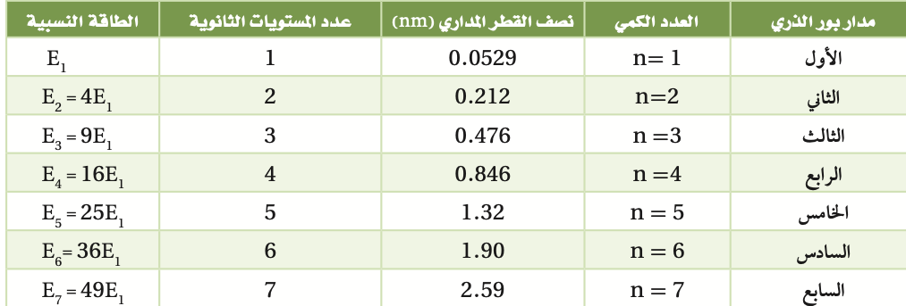
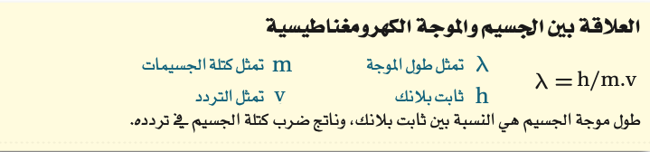
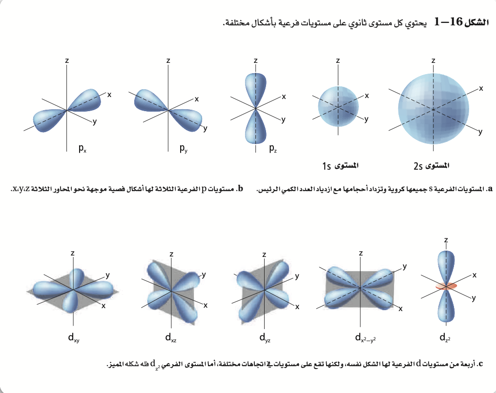
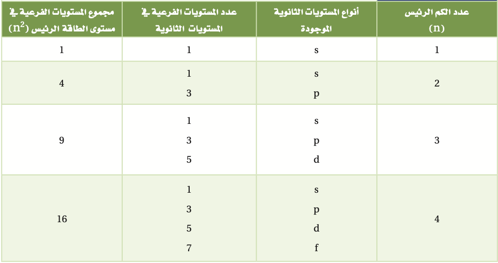

الفكرة الرئيسية:
تساعد الخصائص الموجية للإلكترونات على الربط بين طيف الانبعاث الذري وطاقة الذرة ومستويات الطاقة.
العودة للصفحة الرئسية - الدرس السابق - الدرس التالي
نظرية الكم والذرة
الفكرة الرئيسية:
تساعد الخصائص الموجية للإلكترونات على الربط بين طيف الانبعاث الذري وطاقة الذرة ومستويات الطاقة.
استفاد العالم نيلز بور من أفكار العالمين بلانك وأينشتاين، واقترح أن لذرة الهيدروجين مستويات طاقة معينة يسمح للإلكترونات أن توجد فيها. وتسمى الحالة التي تكون إلكترونات الذرة فيها أدنى طاقٍة حالة الاستقرار أما عندما تكتسب إلكترونات الذرة الطاقة فتصبح في حالة إثارة.
خصص بور لكل مدار عددا صحيحا (n)، أطلق عليه اسم العدد الكمي من أجل استكمال حساباته. كما قام بحساب أنصاف أقطارالمدارات.
اقتنع العلماء في منتصف القرن العشرين أن نموذج بور للذرة غير صحيح، فوضعوا تصورات جديدة ومبتكرة تبين كيف تتوزع الإلكترونات في الذرات
اعتقد دي برولي أن للجسيمات المتحركة خواص الموجات. وقد عرف دي برولي أنه إذاكان للإلكترون حركة الموجة وكان مقيًدا بمدارات دائرية أنصاف أقطارها ثابتة، فإنه يستطيع إشعاع موجات ذات أطوال موجية وترددات وطاقات معينة فقط. وبتطوير فكرته اشتق دي برولي المعادلة الآتية:
كشف العلماء - ومنهم رذرفورد وبور ودي برولي - خفايا الذرة بالتدريج. إلا أن الاستنتاج الذي توصل إليه عالم الفيزياء النظرية هايزنبرج (1901- 1976م) كان له آثاره الكبيرة في النماذج الذرية.
"مبدأ هايزنبرج للشك"ينص على أنه من المستحيل معرفة سرعة جسيم ومكانه في الوقت نفسه بدقة
في عام 1926م تابع الفيزيائي النمساوي إيروين شرودنجر (1887 - 1961م) نظرية الموجة – الجسيم التي اقترحها دي برولي.
ويسمى النموذج الذري الذي يعامل الإلكترونات على أنها موجات بالنموذج الميكانيكي الكمي للذرة. وكما هو الحال في نموذج بور، يحدد النموذج الميكانيكي الكمي طاقة الإلكترون بقيم معينة، إلا أنه - بخلاف نموذج بور - لا يحاول وصف مسار الإلكترون حول النواة.
موقع الإلكترون المحتمل تتنبأ دالة الموجة بمنطقة ثلاثية الأبعاد للإلكترون حول النواة تسمى المستوى، وهو يصف الموقع المحتمل لوجود إلكترون.
تذكر أن نموذج بور قد عين أعداد الكم لمدارات الإلكترون. وعين النموذج الكمي بصورة مشابهة أربعة أعداد كم للمستويات الذرية. يعد العدد الأول هو عدد الكم الرئيس (n)، الذي يشير إلى الحجم النسبي وطاقة المستويات؛ إذ كلما ازدادت قيمة n زاد حجم المستوى، لذايقضي الإلكترون وقًتا أكبر بعيًدا عن النواة، وتزداد طاقة الذرة. لذا تحدد n مستويات الطاقة الرئيسة للذرة ، ويسمى كل منه بمستوى الطاقة الرئيس. وقد أعطي مستوى الطاقة الأدنى للذرة عدد كم رئيسي يساوي (1). وعندما يحتل إلكترون ذرة الهيدروجين الوحيد المستوى 1=n تكون الذرة في الحالة المستقرة. وقد تم تحديد 7 مستويات طاقة لذرة الهيدروجين، أعطيت أعدادا (n) تتراوح بين 1 و 7.
تحتوي مستويات الطاقة الرئيسة على مستويات ثانوية. ويتألف مستوى الطاقة الرئيس 1 من مستوى ثانوي واحد، ومستوى الطاقة الرئيس 2 من مستويين ثانويين للطاقة، ومستوى الطاقة الرئيس 3 من ثلاثة مستويات ثانوية، ومستوى الطاقة الرئيس 4 من أربعة مستويات ثانوية، أما مستويات الطاقة الرئيسة (5-7) من أربعة مستويات ثانوية كالمستوى الرئيس الرابع.
تسمى المستويات الثانوية f ،d ،p ،s حسب أشكال المستويات الفرعية. فمستويات s جميعها كروية الشكل، والمستويات p جميعها تتكون من فصين، أما مستويات d و f فليس لها الشكل نفسه. ويحتوي كل مستوى على إلكترونين كحد أعلى. ويكون شكلا لمستوى الفرعي الوحيد في مستوى الطاقة الرئيس كروًّيا مطابًقا لشكل المستوى الفرعي 1s الذي يوجد فيه.
 انتهى